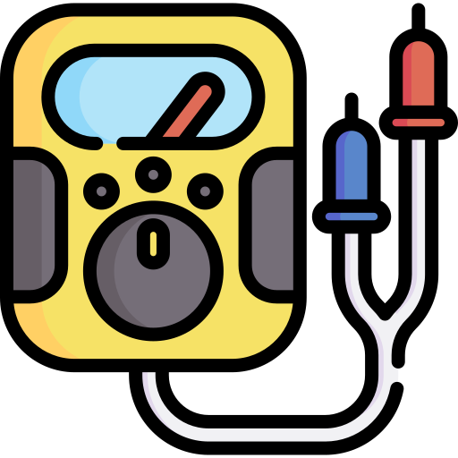

Why is GuideRadPROS needed?
Photon dosimeters are almost universally used in all radiation practices, covering personal and environmental monitoring and emergency response, to assess the protection of people from harmful effects of ionising radiation. Photon dosimeters are tested and calibrated in photon reference fields according to the ISO 4037:2019 standard. The new requirements of the 2019 update result in high costs and manpower to establish such reference fields. Small laboratories and emerging metrology institutes have not been able to fully implement the standard.
X-ray spectrometry and ISO 4037 implementation
- Guidance to implement ISO 4037 series is needed.
- High voltage measurements of x-ray units and the associated uncertainty estimates are needed.
- Missing data regarding Am-241 reference fields is needed.
- Harmonized procedures for traceable X-ray spectrometry are needed.

Procedures for type testing standards
- There are standards with conflicting requirements for the same type of dosimeter.
- There are standardisation gaps, due to recent or upcoming developments in measurement technology (e.g. spectrodosimetry) and new technologies (e.g., machine learning, AI...).
- The standards must be harmonized.
- Future needs of standardisation must be analysed.
Future needs of standardisation
- ICRU report 95 proposed new operational quantities to replace the current quantities
- A revision of the type test standards is needed.
- A characterization study of existing dosimeters is needed to see whether software and/or design modifications are necessary.